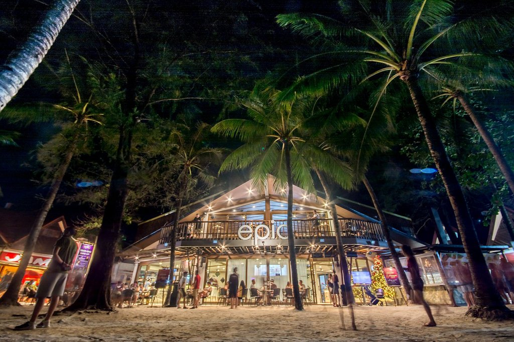
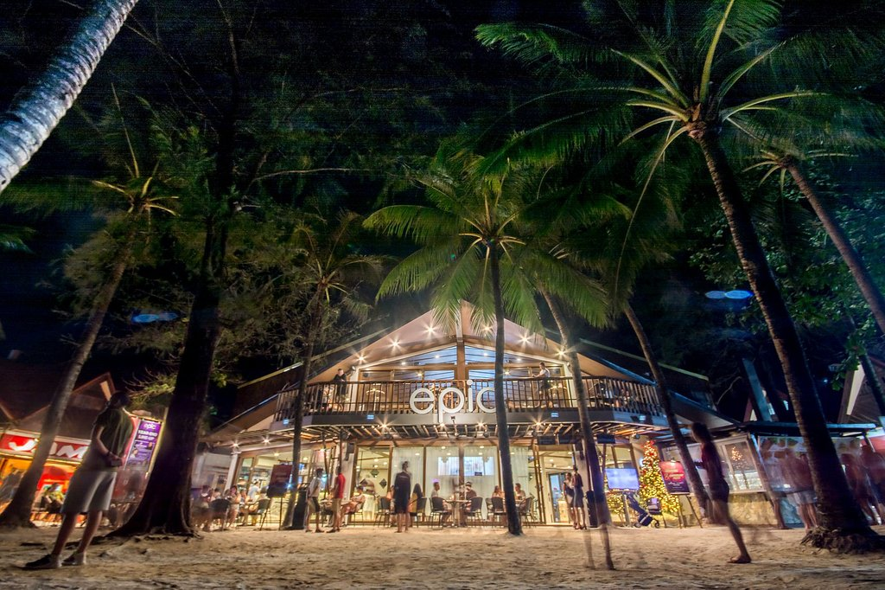

White Beach, Boracay
Origins and Location of Boracay
Boracay is an island located in the Western Visayas region within the Philippines and was originally inhabited by the people of Tumandok and Ati. Boracay is considered as one of the most well-known tourist spots within the Philippines not just for white beaches, but also for its tranquility and nightlife.
Activties and Tourist Spots in Boracay
Boracay's main attraction as a tourist spot are its beautiful beaches white sand and blue waters. Much of the waters surrounding Boracay are filled with different kinds of marine life due to abundance of coral reef. There are also many caves that can be explored by tourists near the Yapak region of the island which includes:
- Bat cave
- Crystal cave
- Buslugan cave
And many more!
Best Things to Do in Each Station in Boracay
Explore the unique offerings of each station in Boracay:
- Station 1:
- Relax on the pristine shores of Station 1 Beach
- Indulge in upscale dining at beachfront restaurants
- Station 2:
- Shop for souvenirs and beachwear at D'Mall
- Experience the vibrant nightlife at bars and clubs
 

- Station 3:
- Enjoy water sports activities like kiteboarding and windsurfing
- Explore the laid-back atmosphere and local eateries
Boracay During the Pandemic
In the following weeks, Boracay faced widespread closures, impacting resorts, shops, schools, bars, and restaurants. The island's residents, aged 21 to 60, with Quarantine Passes, were allowed to purchase essentials while others stayed home. Public transport was banned, rendering the island eerily quiet.
For locals, this lockdown was reminiscent of the 2018 closure, with strict curfews, a liquor ban, closed resorts, and no tourist activity on White Beach, resulting in significant business and job losses.
Boracay After the Pandemic
As the pandemic gradually subsided, Boracay embarked on a path to recovery. With the easing of restrictions and the resumption of international and domestic tourism, the island began to regain its vibrancy. Tourists from around the world once again flocked to the pristine shores of White Beach.
Local businesses, resorts, and restaurants adapted to the new normal, implementing safety measures to ensure the well-being of both visitors and residents. The island's community spirit remained resilient, and Boracay emerged as a symbol of hope and resilience.
Boracay's Tourism
Data from the Malay local government showed that from January to June 17 this year, Boracay registered 1,040,847 tourists, consisting of 199,098 foreign visitors, 816,426 local tourists, and 25,323 overseas Filipino workers.
The number surpassed the 850,047 guests who visited the island during the same period last
year, as the island relaxed its COVID-19-related travel restrictions and began recovering
from the economic slump caused by the pandemic